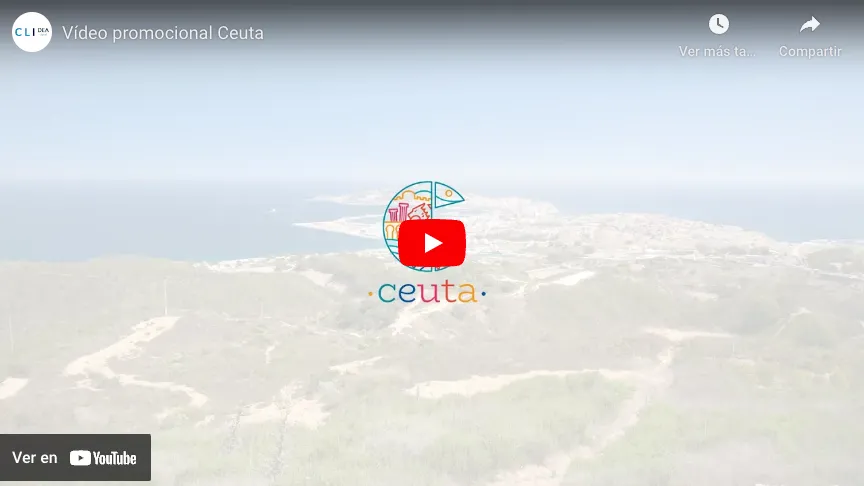

Presentación de la web
Qué encontrarás en esta página
Esta página web es una presentación de la ciudad en la que yo vivo: Ceuta.
Aquí podras encontrar una selección de sitios que visitar en Ceuta, y verás porque a pesar de lo desconocida que es, es tan peculiar y tan digna de ser visitada.
A continuación puedes ver un video introductorio de la ciudad:
La web tiene 4 secciones:
Portada: La página de inicio a la que llegarás nada mas ingrear la url
Categoría: Donde se muestra un listado de los sitios que visitar.
Presentacion: Esta página, donde se explica que es lo que hay en la web
Enlaces: Donde se citan varias webs de donde se han sacado los recursos que componen esta web (imagenes) y donde poder ampliar la información de esta web.
Además, por cada sitio recomendado para visitar existente en la página de categoría, hay una página de detalle en la cual se explica detalladamente dicho lugar.